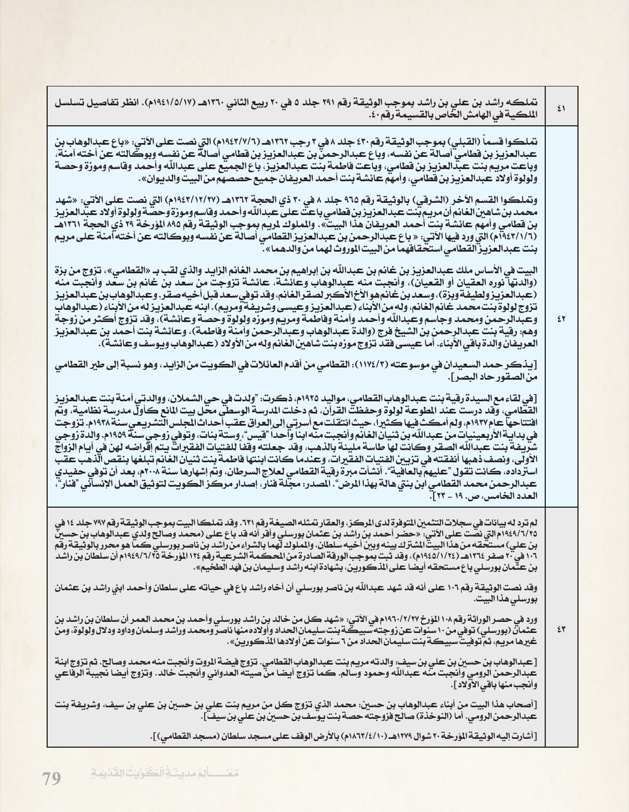

١٨٦٣ إلى ١٨٧١
عبدالوهاب ولولوة الغانم
عبدالوهاب عبدالعزيز القطاميلولوة محمد الغانمعبدالعزيز عبدالوهاب عبدالعزيز القطاميعيسى عبدالوهاب القطاميموزة شاهين الغانم
تزوج عبدالوهاب بن عبدالعزيز من لولوة بنت محمد غانم الغانم، وأنجبا عبدالعزيز وعيسى وشريفة ومريم. وتوفي عبدالوهاب عام ١٨٧١، بعد عام من ولادة عيسى، فتولت لولوة تربية الأبناء.
وتُظهر مشجرة آل زايد أن عبدالعزيز والد عبدالوهاب ومحمدا والد لولوة أخوان من أبناء غانم، فعبدالوهاب تزوج ابنة عمه. وكذلك فعل عيسى بعده، فزوجته موزة هي ابنة خاله شاهين بن محمد الغانم، أخي والدته لولوة.
وحرصت لولوة على تعليم عيسى القراءة والكتابة ومبادئ الحساب، ثم أخذه أخوالها إلى البحر، فسافر أول مرة مع خاله ثنيان محمد الغانم، ثم ركب ثلاث سنوات متصلة مع خاله النوخذة إبراهيم محمد الغانم يتعلم الملاحة وقراءة الخرائط وقياس مواقع السفينة. فمن أخواله آل غانم تعلم أول نواخذة القطامي صنعته.

وثائق هذا الجزء
المصادر
- معالم مدينة الكويت القديمة، الجزء السابع، ص ٧٩، الحاشية ٤٢
- يوسف محمد صقر الجاسر الغانم، آل زايد: تاريخ ورجال، الكويت، سبتمبر ٢٠٠٦، ص ٤٧ و٤٨
- د. يعقوب يوسف الحجي، نواخذة السفر الشراعي في الكويت، الطبعة الثالثة، مركز البحوث والدراسات الكويتية، ٢٠٠٤، ص ٤٢ و٤٣